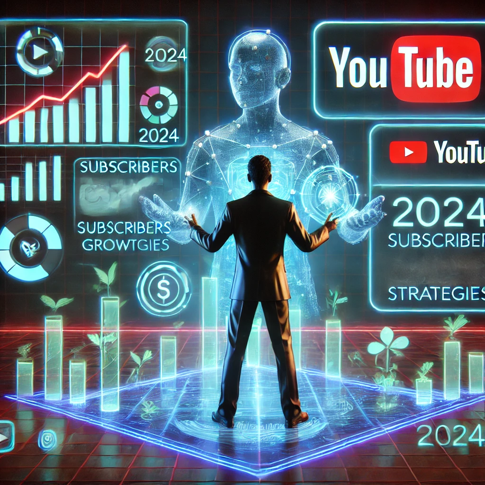

Creating a Successful YouTube Channel: Strategies for Monetization in 2024

In 2024, YouTube remains one of the most powerful platforms for sharing content and generating income. However, building a successful and monetized channel takes more than just uploading videos. It requires strategy, dedication, and a keen understanding of both your audience and YouTube's ever-evolving algorithms. This guide will walk you through everything you need to know about creating a profitable YouTube channel, from choosing the right niche to sustainable monetization strategies, all while maintaining ethical practices that build long-term success.
Understanding YouTube Monetization
You may have heard the term "cash cow YouTube channel"—channels designed specifically to generate revenue. While this approach can be lucrative, success on YouTube should strike a balance between profit and value. Take Chase Namic, an entrepreneur who reportedly earns around $100,000 per month through multiple YouTube channels, many of which he outsources. His success isn't just from the number of views but from providing consistent, engaging content that resonates with audiences.
"To build a sustainable channel, focus on monetization strategies that align with your audience's needs and interests, while ensuring long-term growth."
Step 1: Choosing Your Niche
Your YouTube channel's niche is the foundation of your success. Some of the most popular niches in 2024 include:
- Listicles and Top 10 Videos: Fun, fast-paced, and easy to produce.
- Film and Book Summaries: Cater to audiences who want quick overviews.
- Luxury Content: A rapidly growing niche, especially in the influencer space.
- Celebrity and Gossip News: Entertainment-focused content that consistently draws high traffic.
- Personal Finance: With growing interest in financial literacy, this niche is thriving.
- Cryptocurrency: For those interested in cutting-edge investments.
- Animals: Always a crowd favorite, from pet care to exotic wildlife.
- Automobiles: Gearheads and car enthusiasts are passionate, loyal audiences.
Pro Tip: Choose a niche where you can create at least 50 different video ideas right off the bat. If you can't think of 50 topics for your niche, it may not have enough depth to sustain a channel long-term. Also, ensure your niche aligns with your personal interests or expertise. Authenticity is crucial in building trust and engaging audiences over time.
Step 2: Developing Your Channel's Style
Your channel's identity is tied not just to its content but also to its style and tone. Study successful channels within your niche and identify common themes, but remember to inject your own personality into every video. Whether you use humor, a minimalist aesthetic, or high-energy edits, consistency in your presentation will help build a recognizable brand.
Tips for Developing a Strong Style:
- Branding: Create a consistent color scheme, intro, and outro for all videos.
- Editing: Study trending editing styles. Short, snappy edits work for listicles, while longer, more detailed cuts may suit tutorials or summaries.
- Viewer Interaction: Prompt viewers with questions, polls, or calls-to-action (CTAs) like "Subscribe for more!" This encourages engagement, which YouTube's algorithm loves.
Step 3: Content Creation and Management
System of Operations (SOPs): Behind every successful YouTube channel is a well-oiled machine of operations. As your channel grows, you'll need to manage tasks like video production, scheduling, and post-production. Consider project management tools such as Asana or Trello to keep your workflows organized.
Building a Team: As your workload increases, you may need to hire freelancers or full-time employees to help with scriptwriting, video editing, and graphic design. Platforms like Upwork and Fiverr offer a vast pool of talent.
Step 4: Creating Quality Content
Quality content is the lifeblood of any successful YouTube channel. YouTube's algorithm prioritizes videos with high audience retention (how long viewers stay on your video) and engagement (likes, comments, shares). Here's how to create content that keeps people watching:
- Script Quality: Well-researched, informative, and engaging scripts are essential.
- Visuals and Audio: Invest in clear, high-quality visuals and crisp audio. Even budget-friendly equipment like the Blue Yeti microphone or a Logitech HD webcam can make a huge difference.
- Retention Tactics: Use storytelling to captivate your audience. Whether it's a tutorial or a top 10 video, weave a narrative that keeps viewers hooked until the end.
Step 5: Monetization Strategies
Once you've built a solid subscriber base and are consistently producing content, it's time to monetize. Here are the most effective strategies in 2024:
YouTube Partner Program (YPP)
To join the YPP, your channel must meet these eligibility requirements:
- At least 1,000 subscribers.
- Either 4,000 hours of watch time in the last 12 months or 10 million views on Shorts within the last 90 days.
Once in the program, you can earn revenue through:
- Ad revenue.
- Channel memberships where fans pay a monthly fee for exclusive perks.
- Super Chat and Super Stickers during live streams.
- A share of YouTube Premium revenue from premium users who watch your content.
Alternative Monetization Methods
- Affiliate Marketing: Promote relevant products or services in your videos and earn a commission for every sale made through your referral link.
- Merchandise Sales: Create and sell branded merchandise through services like Teespring or Shopify.
- Online Courses: Are you an expert in your niche? Platforms like Udemy or Skillshare allow you to sell courses that can generate passive income.
- Brand Sponsorships: Ensure you only work with brands that align with your audience to maintain authenticity.
Step 6: Optimizing for Growth
Search Engine Optimization (SEO)
YouTube is a search engine, just like Google. Optimize your videos for searchability by:
- Using Keywords: Research and include relevant keywords in your video titles, descriptions, and tags. Tools like TubeBuddy or VidIQ can help you find trending keywords.
- Creating Engaging Thumbnails: Thumbnails are the first impression. Use clear, bold text and high-contrast images to grab attention.
- Utilizing Playlists: Group similar videos into playlists to keep viewers on your channel longer and increase watch time.
Engagement and Consistency
The more you interact with your audience, the more likely they are to stick around. Respond to comments, ask for feedback, and encourage shares. And most importantly, post consistently. The more regularly you upload, the better the chances that YouTube's algorithm will favor your content.
Ethical Considerations
Ethical monetization and content creation are crucial for long-term success. Stick to these principles to build trust with your audience and YouTube:
- Avoid Clickbait: Misleading titles and thumbnails might get you views initially, but they harm your credibility.
- Full Disclosure: Always disclose sponsored content or affiliate links. Transparency builds trust and ensures compliance with YouTube's policies.
- Respect Copyright: Use only copyright-free or properly licensed content in your videos, and always credit original creators when necessary.
- Accuracy Matters: Provide well-researched and fact-checked information. If you make a mistake, own up to it and correct it.
"Building a successful YouTube channel is about creating a lasting, trustworthy brand. Stay ethical, be consistent, and focus on providing value."
Conclusion
Building a successful YouTube channel in 2024 is not just about chasing views or quick revenue; it's about creating a lasting, trustworthy brand. By choosing the right niche, developing a distinct style, producing high-quality content, and diversifying your income streams, you can create a channel that thrives. Stay ethical, be consistent, and above all, focus on providing value to your audience. The rewards will follow.